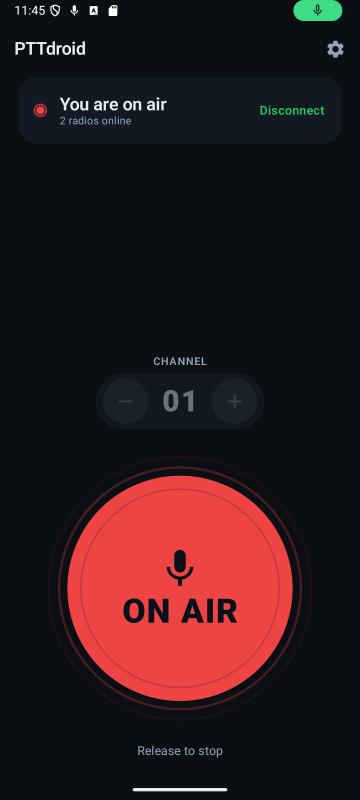
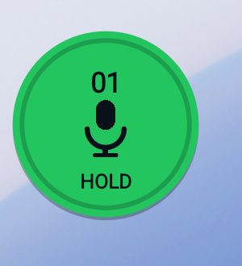
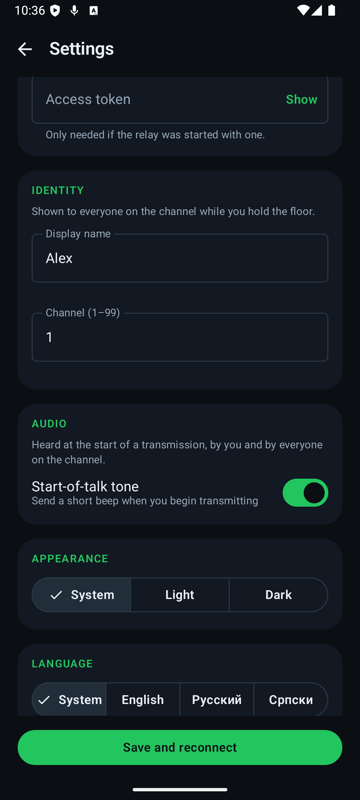
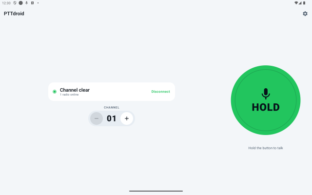

Setup
Three parts,
no accounts
Run a relay
One container, or one JAR. It keeps each channel's members apart and hands out the talk floor. No database, nothing to back up. There is a walkthrough from a spare machine to two handsets talking, firewall and all.
Point the phones at it
Paste the address the server printed, or a tunnel URL, into one box —
the scheme sets the port and the encryption for you. The app shows the exact
ws:// URL it will dial, so a typo is visible before you start wondering
why nothing works.
Pick a channel and press
Channels 1–99. Pressing asks the server for the floor; the microphone opens only once the server answers that it is yours.
Nothing leaves your network. Putting it on the internet means a reverse proxy you own, not a service somebody else runs.
Interface
Built for not
looking at it
A walkie-talkie is used one-handed, in motion, while you are looking at something else — the road, the load, the other person. Three questions have to be answerable in one glance: can I talk, is anyone hearing me, which channel. Everything you touch sits in the bottom half of the screen, where a thumb actually lands.
Colour follows radio convention rather than traffic lights. Red is on air, not "stop". An incoming transmission is blue rather than green, because green here means the channel is yours — which is the opposite of somebody else holding the floor.
And nothing depends on colour alone: every state also changes the word on the button and the glyph above it.

| State | Button | Meaning |
|---|---|---|
| Ready | HOLD | Connected, floor free — the only state where a press transmits |
| Requesting | WAIT | Asked for the floor, no answer yet. Speaking now clips your first word |
| Transmitting | ON AIR | The server granted the floor; the microphone is open |
| Receiving | BUSY | Someone else is talking, and they are named on screen |
| Offline | OFFLINE | No transport — and the card shows the address it cannot reach |
Hands-free
Talk without
opening the app
A microphone foreground service keeps the channel connected, so the app does not have to be in front — or even open — to hear or be heard.
- Floating button — hold to talk over any other app, drag to move. It carries the channel number and a microphone, struck through whenever a press would do nothing.
- Home-screen widget — tap to toggle transmit, −/+ for the channel.
- Notification — Talk, Stop and Disconnect, with the live status.
The widget is a toggle rather than a hold, because a widget only ever receives discrete clicks — there is no touch-down and touch-up to hold on to.

Get it
Add the
repository
Every tagged release is signed and published to this project's own F-Droid repository by CI. In the F-Droid app, go to Settings → Repositories → + and add:
https://devapro.github.io/ptt-client-android/fdroid/repo
Check the fingerprint F-Droid shows against the one printed in the release workflow's log — that is the only thing tying this repository to the project. Signed APKs are also attached to each GitHub release.
You still need a relay. That is the next section.
Build it
Two commands
Start the relay
# in ptt-server/
docker compose up -d
curl -s localhost:8000/health
Or ./gradlew run with JDK 21, if you would rather
not use Docker.
Build and install the app
# in ptt-client-android/
./gradlew assembleDebug
adb install -r -g \
app/build/outputs/apk/debug/app-debug.apk
Then set the relay host in Settings. On an emulator that is
10.0.2.2 — inside an emulator, localhost is the emulator itself.
127.0.0.1, and point the other
phones at its address on the Wi-Fi.
Settings
Nothing is
compiled in
The relay address, display name, channel and theme are all settings. An earlier build had a LAN address baked into the socket class, which made it useless on any other network — so the relay address being editable, and visible, is rather the point.
- Relay — Default, or one Custom address box that takes a host,
a
host:portor a whole pasted URL. Live preview either way. - Identity — the name others see while you hold the floor.
- Appearance — follow the system, or force light or dark.
- Hands-free — the floating button, and the on-device relay.

Any screen
Phones and tablets,
light and dark
In landscape the readout moves beside the button instead of above it, so the control never gets squeezed into whatever is left over.

Source
Two repositories,
one wire contract
ptt-client-android
Kotlin, MVI, Compose Multiplatform (Android, desktop and iOS), a Glance widget on Android, Koin, Ktor client. One controller owns the connection, the microphone and the speaker; on Android it is hosted by a foreground service, and the screen, the floating bubble and the widget are all observers of a single state flow.
136 unit tests · 39 Compose UI tests
ptt-server
Kotlin and Ktor. Per-channel isolation and server-enforced floor control. Every session has its own bounded outbound queue drained by its own writer coroutine, so one slow peer cannot stall the channel.
45 tests, driven through real WebSocket clients
The wire protocol is specified once, in the server repo, and the client follows it: protocol.md. The reasoning behind the interface is written down in ui-design.md.